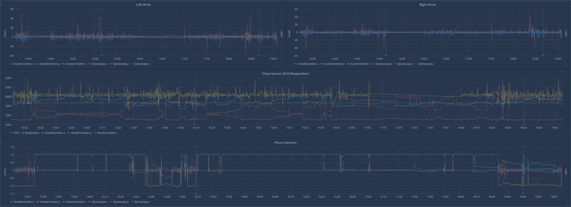

A Principled Approach to Computational Modeling of Health, Daily Behaviors, and Momentary Contexts from High-Frequency Sensor Data¶
This tutorial will introduce students, researchers, and professionals to the end-to-end process for converting high-frequency wearable sensor data into validated features and inferences. This tutorial will begin with a principled approach to doing science before moving into data exploration. Computational and data processing challenges will discussed next along with approaches to handling each. The afternoon sessions will explore computational modeling and validation of approaches for inferring health, daily behaviors, and momentary contexts. The tutorial will conclude with a discussion of the importance of responsible data access, IRBs, and participant privacy. A hands-on component will complement each session and allow the attendee to apply the presented knowledge to a real-world data set.
Context¶
Over the past decade, we have collected and analyzed 100+ terabytes of high-frequency wearable sensor data from lab and field studies at various research institutions across the United States. Through close collaboration of health researchers, we have developed computational models to detect stress, smoking, craving, cocaine use, conversation, brushing, and flossing from physiological and inertial sensors. These models have been published and cited widely in top-tier computing venues (e.g., IPSN, SenSys, UbiComp, CHI, ICML) and health journals. These works have involved 50+ students, postdocs, and faculty from 20 universities and have been supported by the National Institutes of Health (NIH), National Science Foundation (NSF), and other federal agencies via $45+ million in research grants.
Cerebral CortexThese experiences have enabled us to articulate a research vision (in IEEE Computer’13 and ’16) and a principled approach in a graduate-level textbook (Mobile Health by Springer ‘17). Since 2014, via support from both NIH and NSF, including our NIH BD2K Center of Excellence for Mobile Sensor Data-to-Knowledge (MD2K), we have developed an open-source big data software platform for the research community to accelerate their task of collecting, analyzing, and sharing high-frequency, raw sensor data and associated labels (e.g., from self-reports or videos). The platform supports the development and validation of computational models and algorithms for inferring markers of daily behaviors and other risk factors in health and wellness such as momentary contexts. It has supported or currently supports research studies at 15 sites across the United States, investigating smoking, overeating, stress, congestive heart failure, oral health, cocaine use, opioid use, chronic pain, behavior change, and workplace performance.
The software platform consists of a platform for smartphones, mCerebrum [SenSys’17], consisting of 25+ apps that enables the collection of large volumes of data from wearables and smartphones (exceeding 1,000 samples per second or 4 gigabytes per day) and a cloud platform, Cerebral Cortex [AMIA’17] which can receive data remotely from thousands of mCerebrum or IoT instances deployed in the field and provide real-time remote monitoring of data collection status for each participant. For researchers, Cerebral Cortex supports scalable big data machine learning model development and custom visualization across population-scale data.
Metadata annotation of the collected sensor data makes them easily usable by third-party researchers. By integrating industry-standard open-source platforms (e.g. Apache Spark, Jupyter Notebooks) the entire software platform is easily usable, deployable, and extensible by other independent researchers.
Goal: This tutorial aims to share the knowledge we have acquired in our computational modeling of health and personal daily behaviors and momentary contexts from high-frequency raw sensor data and provide hands-on experiences with open-source software platforms and libraries. To engage attendees, this tutorial will feature a combination of lectures and demos, presented by the speakers, and participants working with real-world datasets. Attendees will be provided slides, relevant research papers, and a virtual machine containing all the necessary software and datasets before the tutorial session.
Prior Experience: This tutorial builds and expands on talks and keynote speeches at computing and health conferences, universities, industry, and governments, as well as on tutorials (with hands-on experiments) at the annual meeting of the MD2K Center and the mHealth Training Institute at UCLA.
Target Audience¶
This tutorial will benefit CPS and IoT students and faculty by describing interesting new research directions and presenting systematic approaches to mining large sensor datasets for computational modeling of human behaviors and contexts. By using an open-source mobile sensor big data platform for hands-on experiments, this tutorial will also serve faculty and researchers seeking to gain a better understanding of mobile sensor big data research and professionals looking for approaches to handle ever-growing data challenges and demands of high-frequency sensors. At the conclusion, attendees will become familiar with a principled approach for computational modeling of daily behaviors and momentary contexts, be aware of the potential hurdles in conducting research with this type of data, and have hands-on experience working with this data via an open-source mobile sensor big data software.
Tutorial Preparations¶
We will post a link to a VirtualBox virtual machine on this site by March 21, 2020. This virtual machine will contain all of the software and data utilized for this tutorial session and the interactive components will leverage this virtual machine configuration. Slides for each session will also be made available on this site prior to the tutorial day.
Tutorial Schedule¶
Time |
Session |
Presenter(s) |
|---|---|---|
8:30 - 9:00 |
Welcome and Overview |
|
9:00 - 10:00 |
Principled Approach with Examples |
Santosh Kumar |
10:00 - 10:30 |
Break and Networking |
|
10:30 - 11:00 |
Data and Visualization |
Nasir Ali |
11:00 - 12:00 |
Computational Pipeline |
Tim Hnat |
12:00 - 13:30 |
Lunch |
|
13:30 - 14:30 |
Model Training |
Anandatirtha Nandugudi |
14:30 - 15:00 |
Validation Approaches |
Tim Hnat |
15:00 - 15:30 |
Break and Networking |
|
15:30 - 16:00 |
Data Access, IRBs, Participant Privacy |
Shahin Samiei and Santosh Kumar |
16:00 - 17:00 |
Team Project: Developing New Features and Inferences |
Tim Hnat and Nasir Ali |
17:00 - 17:30 |
Conclusion, Q&A, and Wrap-Up |
Santosh Kumar and Tim Hnat |
Tutorial Sessions¶
Principled Approach with Examples (Santosh Kumar)¶
This tutorial is designed to help students, researchers, and professionals to introduce rigor in their approach in handling the data diversity and noise that comes from high-frequency sensor data, especially when using them to reliably infer behavioral and momentary contexts. We believe that these techniques will help attendees improve the accuracy and real-world utility of their sensor-derived models. This tutorial will start with the presentation of a principled approach to doing science and will be followed by the topics below.
Data and Visualization (Nasir Ali)¶
This topic focuses on organizing, curating, and storing high-frequency data sets so they are easily and efficiently usable for modeling. An open dataset, mOral, will be utilized to provide real-world context to the data exploration discussions and hands-on coding tutorial.
Computational Pipeline (Tim Hnat)¶
Transforming data from one form to another (e.g., detecting hand to mouth gestures from wrist-worn inertial sensors) is a critical preprocessing stage before getting to the modeling and validation steps. There are many nuances (e.g. windowing, data cleaning, filtering) associated with performing these data transformations which will be discussed in the context of published works and grounded with real data examples. We will show the benefits of these transformations by writing custom feature transformations on the mOral dataset.
Model Training (Anandatirtha Nandugudi)¶
This section is dedicated to the techniques needed to cleanly build, test, and adapt models on large-scale sensor data. We will discuss various considerations including state estimation and event detection, data processing pipelines, interpretability or explainability, generalizability, personalization without new training, and computational efficiency for real-time operation. We will ground this discussion in available open-source tools and use an example from the mOral open dataset. We will show the benefits of these techniques through the impact and quality of the generated results.
Validation Approaches (Tim Hnat)¶
The discussion on validation will emphasize to the attendees the importance and impact of carefully considering how the models are validated for both detection accuracy and temporal accuracy. We will discuss the importance of cross-subject validation, train/test splits, independence of data sets, and the selection of gold standards. Additionally, a discussion on accuracy reporting, including false-positive analysis, recall analysis, temporal accuracy for event start/end times, and confidence levels will expose the attendees to key differences between this type of data and traditional interpretations. As with the other sections, examples will be demonstrated in the context of available open-source tools and a running example.
Data Access, IRBs, Participant Privacy (Shahin Samiei and Santosh Kumar)¶
This discussion will highlight the importance of addressing data access concerns throughout the study and data collection processes. We will discuss the key components of an Institutional Review Board (IRB) protocol and the responsibilities of the researchers involved. Finally, this session will discuss participant privacy issues in the collection and analysis of high-frequency sensor data and current approaches to mitigating them.
Team Project: Developing New Features and Inferences (Tim Hnat and Nasir Ali)¶
The tutorial attendees will be organized in small teams to develop new features or inferences using the knowledge gains from the day’s session using the open mOral dataset and storing them with appropriate metadata so they can be easily used by other researchers.
Conclusion, Q&A, and Wrap-Up (Santosh Kumar and Tim Hnat)¶
We will discuss the challenges, opportunities, and open problems in the computational modeling of daily behaviors and momentary contexts. It will also provide opportunities for open discussions among the attendees including possible next steps.
Speakers¶
Santosh Kumar¶

About
Director, MD2K Center of Excellence
Professor & Lillian and Morrie Moss Chair of Excellence
Department of Computer Science, University of Memphis
Santosh Kumar is the Lillian and Morrie Moss Chair of Excellence Professor in the Department of Computer Science at the University of Memphis. Santosh has been leading large multidisciplinary mobile health (mHealth) projects since 2007, sponsored by NSF and NIH. He is currently leading an NIH Center of Excellence on Mobile Sensor Data-to-Knowledge (MD2K), a truly transdisciplinary project in which Santosh leads a team of 20+ investigators from 12 universities who come from diverse but complementary disciplines including computer science, engineering, statistics, public health, medicine, and behavioral science. His work has led to the development of novel sensor-derived mHealth biomarkers such as stress, conversation, smoking, craving, cocaine use, brushing, and flossing. In addition to direct experience with leading transdisciplinary mobile sensor research projects, Santosh has led national efforts to advance the field of mHealth. He has chaired national meetings on mHealth Evidence and on identifying computing grand challenges in mHealth.
Tim Hnat¶

About
Chief Software Architect, MD2K Center of Excellence
University of Memphis
Tim Hnat began working in mobile health (mHealth) and IoT space in 2008, publishing multiple papers in ACM SenSys. He works as an assistant professor of Computer Science from 2012 when he initiated a kinematic sensing project (K-Sense) that utilized motion tracking bands to target obesity and diabetes. This work led to his selection as an mHealth scholar as part of the prestigious, annual NIH mHealth Summer Institute in 2013 and returned in 2019 as a faculty instructor. Based on this experience, Tim was recruited in 2014 to become the chief software architect for the University of Memphis-based NIH Center of Excellence on Mobile Sensor Data-to-Knowledge (MD2K). In this role, Tim oversees the development of both mCerebrum and Cerebral Cortex and their deployment across 11 states in the US for high-frequency sensor data collection in research studies. He also supports the usage of these data for computational modeling by computing researchers and population-scale analysis by health researchers. He supervises a team of four software engineers, three with doctoral degrees.
Nasir Ali¶

About
Research Assistant Professor
Department of Computer Science, University of Memphis
Nasir Ali has a diverse research background from software engineering to mobile health (mHealth) and IoT space since 2009. His work has been published in top journals (Transactions in Software Engineering and Empirical Software Engineering). In 2016, he joined MD2K to conduct research and develop cloud-based solutions (i.e. Cerebral Cortex), standardization of mHealth sensor metadata, data analysis/modeling pipelines, and visualization layers to support high-frequency mobile sensor big data management, analysis, and producing actionable results. Nasir is the core developer of Cerebral Cortex.
Anandatirtha Nandugudi¶

About
Data Science Software Engineer
Department of Computer Science, University of Memphis
Anandatirtha Nandugudi designs, develops, and validates mobile health (mHealth) biomarkers along with a team of graduate students at the MD2K Center of Excellence. He has a rich research background in the areas of mobile computing, networking and sensor networks, and has published several recognised works in these areas in proceedings such as UbiComp. In addition to leading the implementation of newly developed mHealth biomarkers in Cerebral Cortex and mCerebrum, he is volunteering his services to standardise health metadata as part of the IEEE P1752 working group to enable interoperability and wider adoption of mHealth biomarkers.
Shahin Samiei¶

About
Associate Director, Research & Studies
MD2K Center of Excellence, University of Memphis
Shahin Samiei serves as the MD2K Center’s Associate Director of Research & Studies. He oversees the MD2K Center’s human subjects research, institutional review board (IRB) protocol writing and management, research compliance, informed consent processes and procedures, and data sharing, for all 15 research studies using MD2K software and sensors. In doing so, he directs formal data-sharing agreements, ensures maintenance with procedures outlined in study protocols and consent processes, and manages access control to study data repositories, across all participating personnel at each collaborating site. He also directs research logistics (e.g., inventory management) for the MD2K Center’s research tools, such as sensor platforms and related data collection equipment. Shahin’s background is in public health, having received his MPH from the University of Memphis.